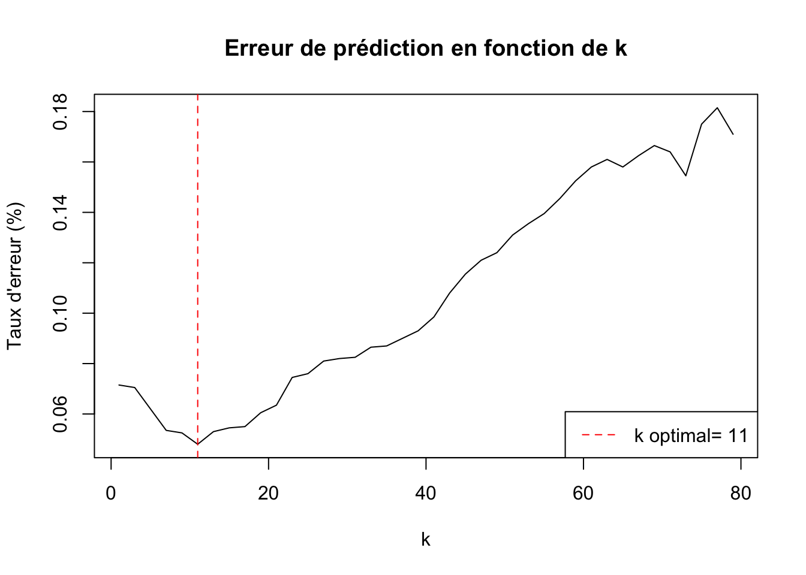

'data.frame': 150 obs. of 5 variables:
$ Sepal.Length: num 5.1 4.9 4.7 4.6 5 5.4 4.6 5 4.4 4.9 ...
$ Sepal.Width : num 3.5 3 3.2 3.1 3.6 3.9 3.4 3.4 2.9 3.1 ...
$ Petal.Length: num 1.4 1.4 1.3 1.5 1.4 1.7 1.4 1.5 1.4 1.5 ...
$ Petal.Width : num 0.2 0.2 0.2 0.2 0.2 0.4 0.3 0.2 0.2 0.1 ...
$ Species : Factor w/ 3 levels "setosa","versicolor",..: 1 1 1 1 1 1 1 1 1 1 ...L’algorithme des \(k\) plus proches voisins
R
Machine learning
Application sur R de l’algorithme des \(k\) plus proches voisins.
Introduction
L’algorithme des \(k\) plus proches voisins est une méthode d’apprentissage supervisé. Il peut être utilisé pour la classification lorsque la variable à expliquer (\(Y\)) est qualitative, mais aussi pour effectuer une régression lorsque \(Y \in \mathbb{R}\).
En apprentissage supervisé, une variable \(Y\) est étudiée à partir de variables explicatives \(X\) à des fins de description ou de prédiction. En ce qui concerne la prédiction, l’objectif est de prévoir l’étiquette (classification) ou la valeur (régression) de \(Y\) associée à une nouvelle entrée \(x\). En apprentissage non supervisé, le problème est beaucoup moins bien posé. Il s’agit de découvrir des structures intéressantes dans des données non étiquetées, notamment à travers l’analyse exploratoire multidimensionnelle et la classification non supervisé
Ici, nous sommes face à un problème d’apprentissage supervisé : nous disposons d’un jeu de données constitué de \(N\) lignes représentant chacune un “individu”. Pour chaque individu, on dispose de \(n\) caractéristiques (les entrées) et d’une donnée représentant l’étiquette (ou la classe) à laquelle ce dernier appartient. Chaque ligne est donc constituée de \(n+1\) données. Notre objectif est de construire un modèle prédictif prenant en entrée \(n\) valeurs correspondant aux caractéristiques d’un “individu” et donnant en sortie la classe à laquelle il appartient.
Méthode des \(k\) plus proches voisins
Pour estimer la sortie (étiquette ou valeur) associée à \(n\) entrées \((x_1, ..., x_n)\), la méthode des \(k\) plus proches voisins consiste à déterminer les \(k\) lignes du jeu de données dont les \(n\) entrées sont les plus proches des valeurs \((x_1, ..., x_n)\) à travers le calcul d’une distance.
Ensuite, l’algorithme regarde les \(k\) voisins les plus proches et détermine leur sortie. En classification, il attribue à l’individu la classe la plus fréquente parmi ces \(k\) voisins (on parle de vote majoritaire). En régression, il calcule simplement la moyenne des valeurs de sortie.
Il existe différents types de distances pouvant être utilisés pour l’algorithme des \(k\) plus proches voisins.
Nous utiliserons la distance Euclidienne. C’est tout simplement la racine carrée de la somme des carrés des différences entre chaque coordonnée des deux points. Elle est donnée par la formule ci-dessous et représente la distance la plus courte entre deux points. Elle est également connue sous le nom de norme L2 d’un vecteur.
\[d(x, y) = \sqrt{ \sum_{i=1}^{n} (x_i - y_i)^2 }\]
Nous appliquerons la méthode des \(k\) plus proches voisins à un cas de classification et à un cas de régression, en nous appuyant sur deux jeux de données distincts.
Classification
Nous commençons par importer le package class. Ce dernier ne contient que des fonctions pour l’algorithme des \(k\) plus proches voisins et nous sera utile pour le cas de classification.
---
library(class)
---Le jeu de données Iris, également connu sous le nom d’Iris de Fisher, contient 150 observations de trois espèces d’iris : setosa, virginica et versicolor. Pour chaque fleur, quatre caractéristiques mesurées en centimètres sont renseignées : la longueur et la largeur des sépales, ainsi que la longueur et la largeur des pétales.
Ce jeu de données est initialement intégré à R. Nous l’importons à l’aide de la commande suivante :
---
data(iris)
---Nous disposons donc d’un jeu de données avec 4 variables explicatives, qui sont les caractéristiques de chaque fleur, et une variable à prédire, qui est l’espèce. On observe ci-dessous que la variable Species comporte trois modalités. Afin d’éviter un problème de classification multiclasse, nous choisissons d’exclure la modalité Setosa. L’objectif est de construire un modèle qui se résume à une règle de classification binaire.
---
str(iris)
---On supprime les 50 observations associées à l’espèce Setosa, puis la modalité correspondante de la variable.
---
iris <- iris[!iris$Species == "setosa",]
iris$Species <- droplevels(iris$Species)
---Notre jeu de données compte désormais 50 observations.
---
dim(iris)
---[1] 100 5Iris est un jeu de données souvent utilisé à des fins pédagogiques, car il est déjà propre, équilibré et bien structuré. Il ne comporte pas de valeurs manquantes, les variables sont déjà au format numérique, leurs échelles sont relativement comparables, et la répartition des classes est équilibrée. Nous ne réaliserons donc pas d’analyses descriptives approfondies, mis à part le résumé statistique de notre data frame présenté ci-dessous.
---
summary(iris)
--- Sepal.Length Sepal.Width Petal.Length Petal.Width
Min. :4.900 Min. :2.000 Min. :3.000 Min. :1.000
1st Qu.:5.800 1st Qu.:2.700 1st Qu.:4.375 1st Qu.:1.300
Median :6.300 Median :2.900 Median :4.900 Median :1.600
Mean :6.262 Mean :2.872 Mean :4.906 Mean :1.676
3rd Qu.:6.700 3rd Qu.:3.025 3rd Qu.:5.525 3rd Qu.:2.000
Max. :7.900 Max. :3.800 Max. :6.900 Max. :2.500
Species
versicolor:50
virginica :50
Afin de pouvoir évaluer notre modèle, nous divisons notre jeu de données en deux sous-ensembles : Un jeu de données d’apprentissage réprésentant 80 % du jeu de données initial. L’algorithme s’entraînera à partir de ces données. Puis un jeu de données de test correspondant aux 20 % restants. Il servira à évaluer les performances du modèle de classification sur des données jamais vues pendant l’apprentissage.
---
N <- 80
idx1 <- sample(1:50, N/2, replace = F)
idx1 <- sample(1:50, N/2, replace = F) # Tirage aleatoire de 40 indices entre 1 et 50
# (classe : versicolor)
idx0 <- sample(51:100, N/2, replace = F) # Tirage aleatoire de 40 indices entre 51 et 100
# (classe : virginica)
dataL <- iris[c(idx1,idx0),] # Apprentissage (80 %)
dataV <- iris[-c(idx1,idx0),] # Test (20 %)
---Nous pouvons maintenant créer notre fonction de prédiction et l’appliquer à nos données à l’aide de la fonction knn(). Cette fonction prend cinq paramètres principaux :
train : le jeu de données d’apprentissage,
test : le jeu de données sur lequel on souhaite faire des prédictions,
cl : le vecteur des classes associées aux données d’apprentissage \((Y)\),
\(k\) : le nombre de voisins à considérer pour la classification,
prob : un paramètre optionnel qui, s’il est défini à
TRUE, renvoie également la probabilité associée à la prédiction.
---
prediction = knn(train = dataL[,-5], test = dataV[,-5],
cl = dataL[,5], k = 3)
---Ici, nous avons choisi de considérer les 3 plus proches voisins pour prédire la classe de la prochaine observation. On voit sur l’image ci-dessous que la valeur de \(k\) influence fortement la performance du modèle et la qualité des prédictions.
Nous verrons par la suite comment déterminer la valeur optimale de \(k\) afin de minimiser le taux de mauvaise classification.
Nous calculons l’erreur de notre classification, c’est-à-dire le taux de mauvaise classification sur l’échantillon test. Il s’agit simplement de comparer les prédictions aux vraies valeurs, puis de calculer la proportion d’observations mal classées.
---
mean(prediction != dataV[,5])
---[1] 0.15Le taux d’erreur de notre classification est de 15 %. Cependant, ce taux peut varier à chaque répétition de l’expérience, car la répartition des données entre l’échantillon d’apprentissage et celui de test change à chaque tirage aléatoire. Nous décidons donc de répéter l’expérience 100 fois, en utilisant des échantillons différents à chaque itération. À l’issue de ces répétitions, nous calculerons la moyenne des taux de mauvaise classification obtenus afin d’obtenir une estimation plus fiable de la performance du modèle.
---
rep <- 100 # Nb de répétitions
error <- rep(NA, rep)
for (i in 1:rep){
N <- 80
idx1 <- sample(1:50, N/2, replace = F)
idx0 <- sample(51:100, N/2, replace = F)
dataL <- iris[c(idx1,idx0),]
dataV <- iris[-c(idx1,idx0),]
prediction_100 <- knn(train = dataL[,-5], test = dataV[,-5],
cl = dataL[,5], k = 3)
error[i] <- c(mean(prediction_100 != dataV[,5]))
}
mean(error)
---[1] 0.053Le taux d’erreur de notre classification est de 5,3 % lorsque nous considérons les 3 plus proches voisins. Il existe de nombreux types de visualisations sur R, tant pour les prédictions que pour les erreurs, que nous ne détaillerons pas ici.
Nous souhaitons maintenant déterminer le nombre de voisins qui permet la meilleure classification de la nouvelle observation. Pour ce faire, nous allons chercher à identifier la valeur optimale de \(k\), ce qui permettra de réduire le taux d’erreur du modèle précédent. Afin de gagner du temps, nous calculerons le taux d’erreur moyen pour chaque valeur de \(k\) à partir de 100 échantillons différents.
---
rep <- 100 # Nb de répétitions
kval <- seq(1, 79, by = 2)
error <- matrix(NA, rep, length(kval))
for (i in 1:rep){
N <- 80
idx1 <- sample(1:50, N/2, replace = F)
idx0 <- sample(51:100, N/2, replace = F)
dataL <- iris[c(idx1,idx0),]
dataV <- iris[-c(idx1,idx0),]
for (j in 1:(length(kval)))
{
prediction_2 <- knn(train = dataL[,-5], test = dataV[,-5],
cl = dataL[,5], k = kval[j])
error[i,j] <- mean(dataV[,5] != prediction_2)
}
}
---On visualise les résultats sur le graphique ci-dessous.

Ici, il est nécessaire de considérer 11 voisins pour obtenir le taux de classification le plus faible. Nous réentraînerons donc le modèle en utilisant ce paramètre modifié.
---
rep <- 100 # Nb de répétitions
error <- rep(NA, rep)
for (i in 1:rep){
N <- 80
idx1 <- sample(1:50, N/2, replace = F)
idx0 <- sample(51:100, N/2, replace = F)
dataL <- iris[c(idx1,idx0),]
dataV <- iris[-c(idx1,idx0),]
prediction_11 <- knn(train = dataL[,-5], test = dataV[,-5],
cl = dataL[,5], k = 11)
error[i] <- c(mean(prediction_11 != dataV[,5]))
}
mean(error)
---[1] 0.039Nous obtenons un taux d’erreur plus faible (3,9 %) par rapport au modèle précédent, ce qui confirme notre petite recherche du \(k\) optimal.